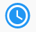

Un ensemble de ressources éducatives en ligne pour les élèves du primaire et du secondaire et les enseignants. Vous pouvez regarder des vidéos, travailler sur des exercices, accéder à des livres numériques et interagir avec des simulations. Les données ne sont pas facturées lors de l'accès à Instant Schools (Vodaeduc).
La connexion internet n’est pas facturée pour les abonnés Vodacom si vous désactivez le WiFi et assurez-vous d’être connecté au réseau mobile Vodacom. Vous pouvez ensuite utiliser Vodaeduc à zéro coût. Des frais de connexion internet peuvent s’appliquer aux clients d’autres réseaux de téléphonie mobile ou de réseaux WiFi.
Les matières disponibles pour les Apprenants et les Enseignants sont affichés dans les onglets Recommandé et Sujet sur la page d’accueil. Ces matières comprennent:
Matières spécialement conçues pour les élèves et enseignants de la RDC adaptée au programme national
Contenu numérique de haute qualité et pertinent développé par des fournisseurs des matières éducatives de standard international. Ce contenu éducatif n'est pas aligné au programme national congolais mais constitue une très bonne référence d'apprentissage.
Vous pouvez commencer à apprendre en cliquant sur le contenu de 2 voies différentes. L'onglet Recommandé diffuse tout le contenu, le contenu le plus populaire et, si vous êtes un utilisateur enregistré, le contenu sur lequel vous progressez. L'onglet « Sujets » vous permet de naviguer à travers toutes les matières et sujets et sous-sujets de chaque matière.
Click the magnifying glass  in the upper right corner to search for a specific subject, topic or term. Type the word or combination of words you are looking for and press Enter. Search results are displayed below.
in the upper right corner to search for a specific subject, topic or term. Type the word or combination of words you are looking for and press Enter. Search results are displayed below.
Cliquez sur l’onglet en forme de loupe en haut du côté droit pour rechercher un sujet ou un terme spécifique. Tapez le mot ou la combinaison de mots que vous recherchez et appuyez sur Entrée. Les résultats de la recherche sont affichés ci-dessous.
Vous gagnez des points en apprenant! Si vous regardez une vidéo, répondez et maîtrisez des exercices, interagissez avec une simulation, lisez un livre, vous obtiendrez des points. Vous pouvez voir votre total de points dans votre profil à tout moment. Vous devez être un apprenant inscrit pour gagner des points
| Icônes | Sens |
|---|---|
|  | En cours - Vous interagissez avec le contenu, mais vous ne l'avez pas encore maîtrisé |
| Maîtrise (canaux Khan Academy) - Points gagnés! Vous avez regardé toute la longueur d'une vidéo ou répondu correctement à 5 questions d'exercices d'affilée sans aucun indice | |
| Terminé (Autres matières) - Points gagnés! Vous avez interagi avec le contenu | |
|
|
Exercise |
|
|
Sujets du contenu |
| Dossier Sujet du contenu | |
| App: exercice interactif, flexbook | |
| Vidéo | |
|
|
Document PDF |
| Audio |
Compléter un exercice n'est pas obligatoire. Cependant, pour maîtriser les exercices de Khan Academy, vous devez répondre correctement à 5 questions d'exercices d'affilée sans aucun indice. La maîtrise d'autres matières du contenu peut varier.
Si vous cliquez sur le bouton Obtenir Un indice, des indices vous seront fournis pour vous aider à répondre correctement à la question. Si vous choisissez d'obtenir un indice, vous devrez toujours répondre à la question, mais cela ne comptera pas pour votre série de victoires requise pour la maîtrise des exercices de Khan Academy.
Si vous vous inscrivez, vous gagnerez des points! Vous serez en mesure de suivre vos progrès et pouvez commencer là où vous vous étiez arrêté lors de votre précédente session. Pour vous inscrire, vous devrez fournir votre nom, votre numéro de téléphone et votre mot de passe. Plus d'une personne peut s'inscrire par un numéro de téléphone.
Vous pouvez suivre votre progression si vous vous enregistrez et créez un compte Instant Schools.
De nouveaux contenus seront régulièrement ajoutés à la plateforme, assurez-vous donc de ne pas oublier de vérifier!
Cliquez sur le bouton “Mot de passe oublié » sur l'écran d'accueil. Un SMS vous sera envoyé avec un lien de vérification de réinitialisation du mot de passe. Si vous cliquez dessus, vous serez dirigé vers une nouvelle page de mot de passe sur la plateforme.
Si vous disposez d'un contenu éducatif “Open Source » répondant à nos critères techniques et éducationnels, nous sommes disposés à inclure votre contenu dans la plateforme Instant Schools. S'il vous plaît contacter info@learningequality.org. Notez qu'il peut y avoir des coûts d'intégration pour cela.
Vodaeduc est disponible pour les abonnés de tous les réseaux mobiles. La connexion internet n’est pas facturée pour les abonnés Vodacom si vous désactivez le WiFi et assurez-vous d’être connecté au réseau mobile Vodacom. Vous pouvez ensuite utiliser Vodaeduc à zero coût. Des frais de connexion internet peuvent s’appliquer aux clients d’autres réseaux de téléphonie mobile ou de réseaux WiFi.
N’oubliez pas que vous devez désactivez le WiFi pour pouvoir utiliser Vodaeduc gratuitement. Assurez-vous simplement que vous êtes connectés au réseau mobile.